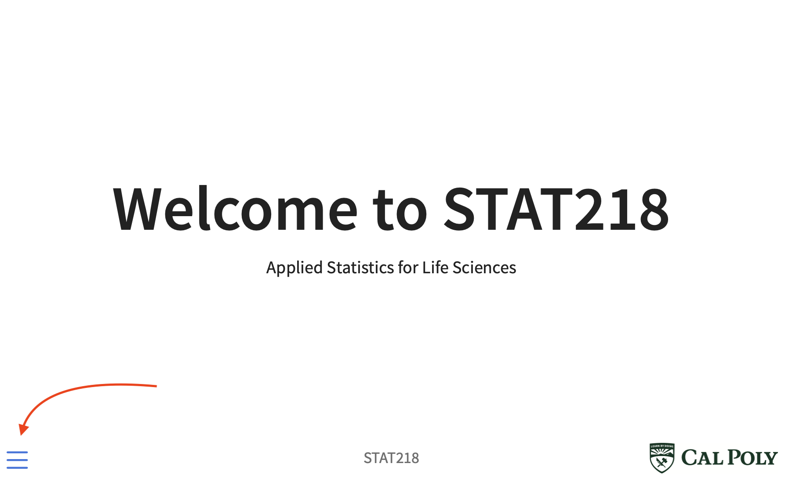

Welcome to STAT218
Applied Statistics for Life Sciences
About me
Hi I’m Trevor. You can call me Trevor, or, if you prefer, Dr. Ruiz.
- Born in Oregon, grew up in Maryland
- BA Philosophy, MS & PhD Statistics
- Research interests: methods for large and complex scientific data
- Hobbies: juggling, dance, classical guitar
- Have a cat named Mona
Why am I a statistician?
Short answer: I like variety.
Long answer:
as a philosophy student I was interested in how we support claims of empirical fact through scientific investigation
usually involves data as quantitative evidence
statistics is the science of evaluating quantitative evidence
Silly answer: I couldn’t come up with anything better to do.
About you
By the numbers…
About you
By show of hands…
- First statistics class ever?
- Last statistics class you expect to take?
- Yes to 1 and 2?
- Expect to use statistics for your degree coursework?
- Expect to use statistics for research or senior project?
- Required for your major?
- Considering a statistics or data science minor?
Uncertainty
Life is full of uncertainty, and this can make a lot of questions hard to answer:
- Imagine you’re a medical care provider. Which therapy should you prescribe for a patient given their prognosis? You don’t know precisely how each one will turn out, so how do you decide?
- Flu shots don’t always prevent people from getting the flu; many people who are innoculated still become ill, sometimes fatally. Your doctor asks if you want the shot. Should you get it?
- You’re a trainer devising a fitness regimen for a client. You’ve decided on the basic elements, but what order should you recommend? Will it make any difference with respect to their goals? How will you know?
- You’re considering trying a nutritional supplement for weight loss. Some people that try it experience severe side effects, but not too many. So, is it safe? It works sometimes, but not all the time. So, is it effective?
Statistics and uncertainty
Key problem: similar situations do not always result in the same outcome.
Statistical thinking: uncertainty is measurable.
What statistics can offer:
- principles for designing studies and collecting data in order to capture outcome variability
- data analytic tools to distinguish random from systematic variability
- heuristics to make inferences that account for uncertainty
Course goal and scope
The overarching goal of 218 is to introduce you to statistics in a hands-on way that is relevant to your major.
So we will focus on:
- statistical thinking, study design, and data analysis
- classical methods, mostly developed 1900-1940
- case studies from life sciences
- application, not theory
Materials
Web. All materials are hosted/linked on the course website. I won’t be using Canvas.
Books. Readings will be assigned from three textbooks, all available at no cost:
- Vu and Harrington (2020). Introdutory Statistics for the Life and Biomedical Sciences.
- Van Belle, Fisher, Heagerty, and Lumley (2004). Biostatistics: a methodology for the health sciences.
- Douglas et al. (2023). An Introduction to R.
Computing. Hosted online via posit.cloud; more details in a bit.
Other. You’ll need a laptop, tablet with keyboard, or access to a computer. MS Word strongly recommended but not strictly necessary.
Printing slides

Printing slides

Printing slides
Printing slides
- I suggest landscape layout and either 1 slide per page or per page
Preparing for class
Every class meeting you should arrive having:
- prepared reading notes or annotations of assigned reading
- obtained a copy of the slides for taking notes
- obtained a copy of activity or lab handouts
Let’s do this now for next class.
Patterns
Class meeting pattern:
- reading quiz (not for credit)
- short lecture, with discussion
- 5min break
- lab activity in groups
- case study presentation, with discussion
Weekly pattern:
- class meeting agendas updated Mondays
- assignments distributed Thursdays
Quarterly pattern:
- [two homeworks, one test] x 3
Tentative schedule
| Week | Topics | Assignments |
|---|---|---|
| 1 (1/8/24) | Introduction to statistical thinking and study design | HW1 |
| 2 (1/15/24) | Data, data types, and data collection | None |
| 3 (1/22/24) | Foundations for inference | HW2 |
| 4 (1/29/24) | Interval estimation and hypothesis tests | Test 1 |
| 5 (2/5/24) | Two-sample inference; nonparametric alternatives | HW3 |
| 6 (2/12/24) | Comparing means with analysis of variance | HW4 |
| 7 (2/19/24) | Inference for categorical data: proportions | Test 2 |
| 8 (2/26/24) | Inference for categorical data: chi-square tests | HW5 |
| 9 (3/4/24) | Simple linear regression: model framework and estimation | HW6 |
| 10 (3/11/24) | Simple linear regression: inference | Test 3 |
| Finals (3/18/24) | N/A | Oral exam |
Assessments
On the syllabus, you’ll find 11 learning outcomes labelled [L1] — [L11].
Graded questions on the homeworks are matched to these outcomes.
Test questions are also matched to outcomes.
Graded questions receive a binary assessment.
(S) satisfactory: outcome attained
(NI) needs improvement: outcome not yet attained
You can submit revisions to any assignment or test for reassessment at least once.
- Timelines and number of attempts differ by assignment type (homework or test).
Final oral exam
You’ll be responsible for identifying a case study in your field of study that uses methods from the class:
in pairs, otherwise private
5min presentation
short Q&A
scheduled during final exam period
Your assessment for this will pertain only to [L11]: applying methods from the course to your major field of study.
Grades
At the end of the quarter, you will receive for each outcome L1 — L11:
a score: proportion of questions that received a satisfactory assessment
an evaluation: whether that outcome was fully met, partly met, or not met
not met: under 50%
partly met: 50% — 80%
fully met: 80% or better
Your letter grade will be based on the tally of fully met and partly met outcomes.
Letter grades
Details are in the syllabus, but:
- Must at partly or fully meet at least…
- 6/11 to pass
- 8/11 for B or better
- 10/11 for A or better
- Subject to those thresholds, letter grade is determined by the number of outcomes fully met
Grading example
| Learning outcome | Score | Evaluation |
|---|---|---|
| L1 | 83% | Fully met |
| L2 | 87% | Fully met |
| L3 | 100% | Fully met |
| L4 | 64% | Partly met |
| L6 | 86% | Fully met |
| L7 | 91% | Fully met |
| L8 | 89% | Fully met |
| L9 | 57% | Partly met |
| L10 | 41% | Not met |
| L11 | 100% | Fully met |
Your grade might look something like this:
[10 partly or fully met] + [7 fully met] ➞ B+
Select policies
collaboration encouraged on homeworks; not allowed on tests
attendance expected; more than two unexcused absences may negatively impact grade
expect to allocate 12-16hr/wk, including class meetings
two free late assignment submissions, anytime and without notice, up to one week from deadline
Office hours & email
Office hours are 12-2 M-W in 25-236
- Schedule 10min time slots via Calendly (see syllabus for link)
Usually I get to email quickly, but allow at least 48 (weekday) hours
- If you haven’t heard back in a week, that means I missed it — send me a reminder!
Working groups
For labs and in class activities, you’ll work in groups. Let’s form those now.
Icebreakers:
Name, major, class standing
Hometown
One personal interest
Introduction to posit.cloud
You’ll be learning some basics in R in this class. It’s not a programming class, so the goal is to learn simply to implement the methods we’re covering.
Why R?
Free
Open source — rapid development for new methods
Widely used
Let’s take some time to introduce this environment.
Go to: course webpage > syllabus > materials. Then look for:
Take a moment to create an account.
An example project
- Make sure the class workspace “stat218” is highlighted at left. If “Your Workspace” is highlighted, you won’t see the example assignment.
- Click on the example assignment, then wait.
Once everyone is ready, we’ll have a look at the example files together.
Orientation checklist
- Overall layout of RStudio: file navigator, console, file editor.
README.md— keep this open for reference as we go.- As an aside: whenever you see a file called README, you should read it.
example-script.Ris an R script- how to execute lines of code
- data import on L18
- make and save changes
example-doc.qmdis a quarto doc- YAML header
- how to render
- make and save changes
- Files you should ignore
For next time
You’ll read about study designs. As you’re reading…
Consider: there is broad agreement that smoking causes cancer, but not all smokers develop cancer.
- What then do we mean by “cause” when we say that smoking causes cancer?
- What do you imagine the evidence might be for this claim?
- How would you design a study to test the hypothesis that smoking causes cancer?
- Which of the designs mentioned in the reading seem potentially applicable?
- Pick one design that seems best suited to the question. If you were to carry out a study according to that design, what would constitute evidence for or against the hypothesis?